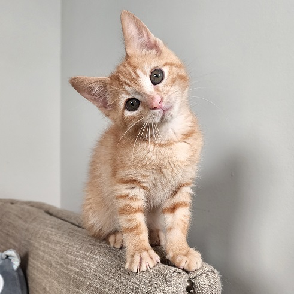
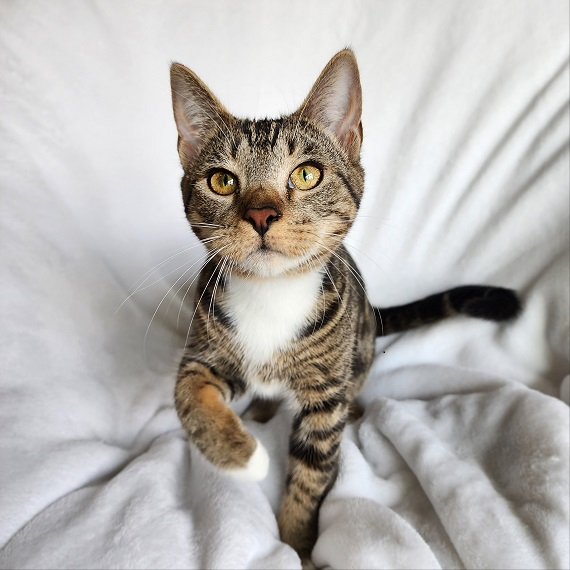
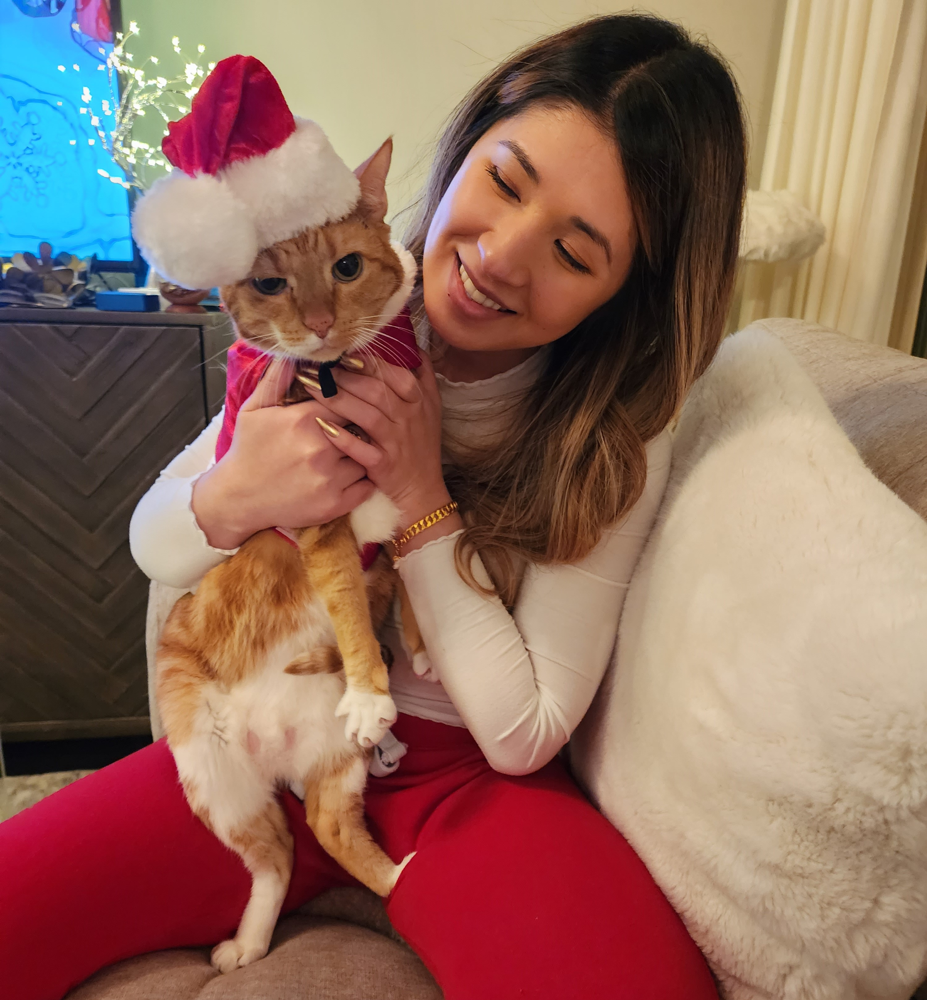

<div class="mainContainer" >
  <mat-tab-group class="tabGroup" #tabGroup >
    <mat-tab  label="Mission" class="tab">
      
       <div class="textContainer scrollEnabled" (swipeleft)="navigate(true)"  (swiperight)="navigate(false)">
        <div class="textBlock bodyContents">
          <div class="subTitle">Dedication</div>
          At The Kitten Rescue Project, we are dedicated to saving the lives of kittens and neonates in need, with the ultimate goal of finding them forever homes. We rescue abandoned, orphaned, and sick kittens and work tirelessly to provide them with the care, nutrition, and socialization they require to grow and develop.
        </div>
        <div class="bodyContents">
          <div class="subTitle">Your Support</div>
          We call upon all animal lovers to join us in our mission to rescue, rehabilitate, and rehome orphaned kittens. Whether you can offer your time, your resources, or your support, your contribution can make a difference in the lives of these vulnerable creatures. Together, we can make a world where every kitten has a chance to grow up happy and healthy.
        </div>
      </div>
    </mat-tab>
    <mat-tab label="Vision" class="tab">
       1 " class="picture animate__animated animate__zoomIn scrollEnabled" src="../../../../assets/images/eliza.jpg" alt="cute kitten" (swipeleft)="navigate(true)"  (swiperight)="navigate(false)"> 
      <div class="textContainer scrollEnabled" (swipeleft)="navigate(true)"  (swiperight)="navigate(false)">
        <div class="textBlock bodyContents">
          <div class="subTitle">A Chance To Thrive</div>
          Our vision at The Kitten Rescue Project is a world where every orphaned kitten and neonate has the chance to thrive and find their forever home. We believe that no kitten should be left to suffer or die alone, and that every kitten deserves love, care, and protection.
        </div>
        <div class="bodyContents">
          <div class="subTitle">No Longer Overlooked</div>
          We envision a future where orphaned kittens and neonates are no longer overlooked or forgotten due to lack of resources, but are instead given a chance to survive. We are committed to working towards this vision every day, and invite you to join us in making a difference in the lives of orphaned kittens everywhere.
        </div>
      </div>
       
    </mat-tab>
    <mat-tab label="History" class="tab">
      <div class="centerContainer">
        
        <div class="textContainerColumn scrollEnabled" (swipeleft)="navigate(true)"  (swiperight)="navigate(false)">
          <div class="textBlock bodyContents">
            <div class="subTitle">A Furball Named Butters</div>
            Once upon a time, a little furball named Butters made his grand entrance into the world in the cozy confines of a bathtub. Butters' mother, a stray cat in dire need of assistance, found refuge with a compassionate cat rescuer who helped her bring five precious kittens into the world. With the caregiver's help, the mama cat took great care of her furry babies until they were ready to embark on their own unique journeys in the world.
          </div>
          <div class="textBlock bodyContents">
            <div class="subTitle">An Unexplainable Tug</div>
            When Jennifer stumbled upon the heartwarming tale of Butters and his siblings, she felt an unexplainable tug towards one little ball of energy in particular. She knew she had to meet the scrappy little kitten with a fierce personality and an insatiable need for love. He captured her heart and sparked her passion for all things feline.
          </div>
          <div class="textBlock bodyContents">
            <div class="subTitle">Becoming A Foster</div>
            Through tireless effort and unwavering dedication, Jennifer fostered countless kittens through an Athens rescue called COFAS. But with experience came an even greater desire to make a difference for some of the most vulnerable felines of all: newborn and underage kittens. So, she set out on a new adventure, founding The Kitten Rescue Project in Atlanta. 
          </div>
          <div class="bodyContents">
            <div class="subTitle">The Kitten Rescue Project</div>
            The Kitten Rescue Project is a haven for these babies, providing around-the-clock care and support to ensure they survive the most fragile stage of their lives. With specialized care, including bottle feeding, diligent monitoring, and socialization, these tiny beings receive the love and attention they need to thrive. And through it all, The Kitten Rescue Project is dedicated to helping kittens find their way home, one paw at a time.
          </div>
        </div>
      </div>
    </mat-tab>
  </mat-tab-group>
</div>
